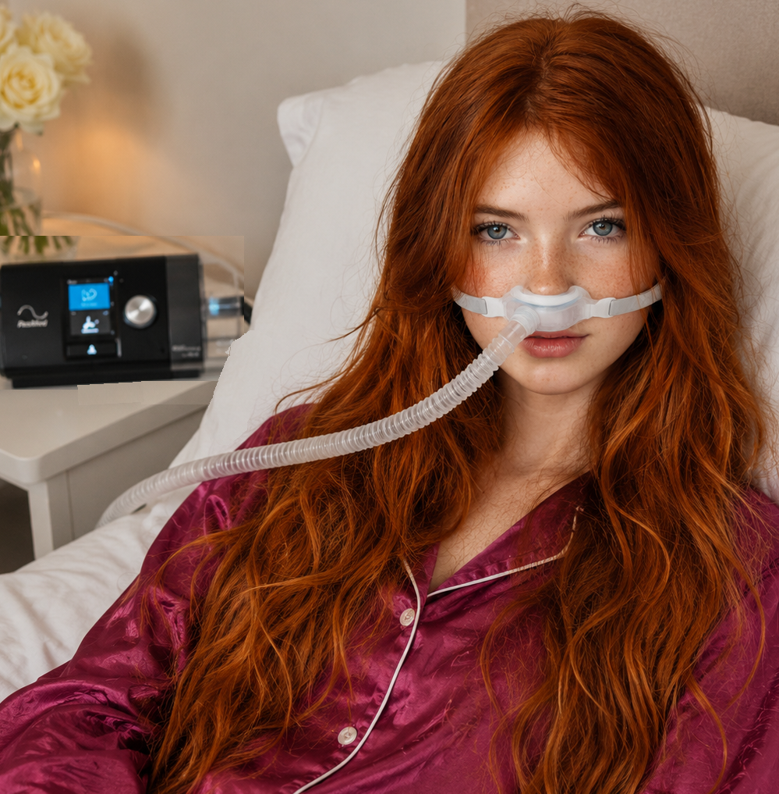
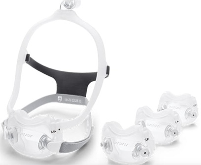

BiPAP
Presión Binivel Positiva
¿De qué forma ayuda el BiPAP?

Cuando el CPAP no es tolerable
Hay personas que toleran mucho mejor el BiPAP que el CPAP, ya que exhalan sin dificultad durante la presión baja, haciendo así la respiración más tolerable.
Ayuda durante la fatiga respiratoria
En condiciones en las que el EPOC se acentúa, durante infecciones o al inicio de una neumonía, el BiPAP puede ayudar a estabilizar la respiración y reducir el ingreso hospitalario.

Mejora de la ventilación pulmonar
Al crear dos niveles de presión, el BiPAP aumenta el flujo de aire fomentando la ventilación, ayudando a eliminar el dióxido de carbono más efectivamente que el CPAP.

La opción de máscara y medida
Elegir la máscara ideal (facial completa, nasal o bajo la nariz) es esencial para que sea cómoda y sin pérdidas de presión, logrando así una terapia efectiva.

Corrección de la máscara para mayor comodidad
Guía e instrucción sobre escapes de aire, sequedad, incomodidad por la presión o dificultad para adaptarse al aparato.

Uso diario y adaptación
Estrategias prácticas para ayudarte a acostumbrarte al uso del BiPAP, mejorando la calidad del sueño y aumentando su efectividad con el tiempo.
El BiPAP puede ser una herramienta muy efectiva cuando se usa correctamente. Si no estás seguro sobre la configuración del aparato, la máscara o la tolerancia, te puedo ayudar paso a paso para sacar el máximo beneficio de tu terapia.